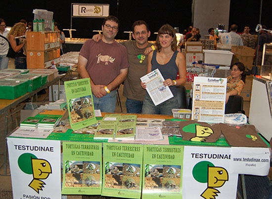

|
Con este bolet�n que
presentamos, las personas que formamos el grupo de Testudinae
queremos
dar un paso m�s en nuestro proyecto de difundir informaci�n
actual para el cuidado de las tortugas en general.
El primer n�mero fue creado y distribuido en
Septiembre del 2006 en la 2� Edici�n de la Feria Expoterraria.
El segundo n�mero fue creado en junio del 2007 y tambi�n
repartido gratuitamente en la 3� edici�n de la Feria
Expoterraria. Pueden descargarse en formato PDF en los enlaces
que se muestran a continuaci�n:
N�mero 1
- Septiembre 2006 (PDF)
N�mero 2
- Junio 2007 (PDF)
Para abrirlo necesitas
descargar
Acrobat Reader
Si deseas obtener ejemplares de la edici�n impresa
(s�lo el n�mero 2) escribe a:
forotestudinae@hotmail.com

Mesa Testudinae en Expoterraria.
Barcelona, Septiembre 2006.

|